Q01 · 42.6 / Control of Breathing in Humans 正式分類
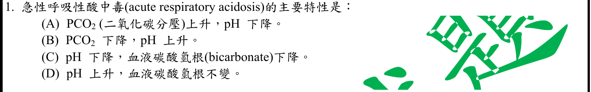
本地原卷PDF1 · 官方混科卷PDF18 · 官方原答案PDF1最下方生物表 · 已核對同年生物釋疑PDF26–27（未列本題）
官方採計：A 原答案：A
未列本輪取得的108年度釋疑PDF26–27；依同年答案採計，不宣稱沒有其他未取得公告
主分類：Ch42 Circulation and Gas Exchange
42.6 / Control of Breathing in Humans
目錄行2843；條目起始印刷頁946；實際目錄 PDF46
次分類：Ch03 Water and Life
3.3 / Buffers
目錄行181；條目起始印刷頁52；實際目錄 PDF35
主分類理由：42.6 / Control of Breathing in Humans：946頁人類呼吸控制直接以通氣、血CO2與pH的聯繫解釋酸鹼變化；急性CO2滯留的方向以此最小條目最貼切。
次分類理由：3.3 / Buffers：酸鹼與碳酸緩衝平衡解釋PCO2增加如何降低pH。
科學說明：採A。急性呼吸性酸中毒的原發變化為PCO2上升、pH下降；不能把代謝性酸中毒的碳酸氫根下降當作定義。腎臟增加排酸及保留HCO3的代償需時間，與原發變化分開。
來源涵蓋範圍：Campbell提供列示分類原理；未直接涵蓋的細節由具名補充來源與同年釋疑支援，取得及實讀界線見來源紀錄。
教材正文：印刷52／PDF101、印刷946／PDF995、印刷948／PDF997
補充來源：S01
另行比較：酸鹼緩衝Ch03與呼吸氣體運輸Ch42何者為主
呼吸性異常以946頁通氣與CO2/pH關係為直接證據，採Control of Breathing in Humans為主、Buffers為次；A方向確認。
結論：證據確認，分類疑義已解決。完整覆核紀錄
Q02 · 42.2 / Maintaining the Heart’s Rhythmic Beat 正式分類
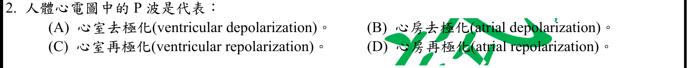
本地原卷PDF1 · 官方混科卷PDF18 · 官方原答案PDF1最下方生物表 · 已核對同年生物釋疑PDF26–27（未列本題）
官方採計：B 原答案：B
未列本輪取得的108年度釋疑PDF26–27；依同年答案採計，不宣稱沒有其他未取得公告
主分類：Ch42 Circulation and Gas Exchange
42.2 / Maintaining the Heart’s Rhythmic Beat
本地文字目錄L2776為Maintaining the Heart’s Rhythms；本輪依12e PDF46目錄及印刷928正文採真實標題，原文字目錄保留。 目錄行2776；條目起始印刷頁928；實際目錄 PDF46
主分類理由：42.2 / Maintaining the Heart’s Rhythmic Beat：P波的心房去極化屬心臟電傳導與節律；928頁圖42.8的第一段波形對應心房。
次分類理由：無另列最小次條目；問ECG特定P波而非通用興奮性，928圖與原作者P波段支持心臟節律；校正文目錄Rhythms異文。
科學說明：採B。P波代表心房去極化，電活動先於機械收縮；QRS與T波分別主要反映心室去極化與再極化。正文及PDF46目錄真實標題為Maintaining the Heart’s Rhythmic Beat，本地文字目錄的Rhythms異文原檔保留。
來源涵蓋範圍：Campbell提供列示分類原理；未直接涵蓋的細節由具名補充來源與同年釋疑支援，取得及實讀界線見來源紀錄。
教材正文：印刷928／PDF977、印刷929／PDF978
補充來源：S02
另行比較：一般動作電位Ch48或心臟節律Ch42
問ECG特定P波而非通用興奮性，928圖與原作者P波段支持心臟節律；校正文目錄Rhythms異文。
結論：證據確認，分類疑義已解決。完整覆核紀錄
Q03 · 49.1 / The Peripheral Nervous System 正式分類
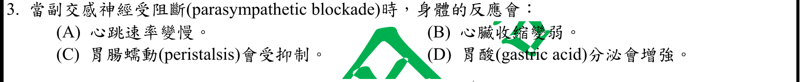
本地原卷PDF1 · 官方混科卷PDF18 · 官方原答案PDF1最下方生物表 · 已核對同年生物釋疑PDF26–27（未列本題）
官方採計：C 原答案：C
未列本輪取得的108年度釋疑PDF26–27；依同年答案採計，不宣稱沒有其他未取得公告
主分類：Ch49 Nervous Systems
49.1 / The Peripheral Nervous System
目錄行3245；條目起始印刷頁1088；實際目錄 PDF48
主分類理由：49.1 / The Peripheral Nervous System：題目要求副交感阻斷後的器官反應，應歸周邊神經系統的自律神經分支與作用。
次分類理由：無另列最小次條目；自律神經阻斷是操弄變項，採49.1周邊系統；C器官結果符合，未把消化器官字樣當主題。
科學說明：採C。副交感通常促進消化活動並減慢心率，阻斷會抑制其促進胃腸蠕動的作用。腸神經系統有自身調節，不能解讀成所有蠕動完全停止；A、B、D不是題設典型反應。
來源涵蓋範圍：Campbell正文支援分類原理；原題限定、同年釋疑細節與最小目錄邊界逐題保留。
教材正文：印刷1088／PDF1137、印刷1089／PDF1138、印刷1090／PDF1139
補充來源：本題未另列課本外來源
另行比較：消化調節Ch41或周邊神經Ch49
自律神經阻斷是操弄變項，採49.1周邊系統；C器官結果符合，未把消化器官字樣當主題。
結論：證據確認，分類疑義已解決。完整覆核紀錄
Q04 · 48.3 / Generation of Action Potentials: A Closer Look 正式分類
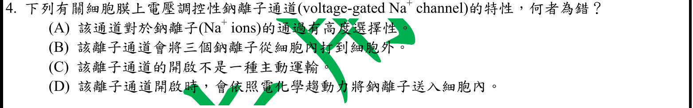
本地原卷PDF1 · 官方混科卷PDF18 · 官方原答案PDF1最下方生物表 · 已核對同年生物釋疑PDF26–27（未列本題）
官方採計：B 原答案：B
未列本輪取得的108年度釋疑PDF26–27；依同年答案採計，不宣稱沒有其他未取得公告
主分類：Ch48 Neurons, Synapses, and Signaling
48.3 / Generation of Action Potentials: A Closer Look
目錄行3209；條目起始印刷頁1073；實際目錄 PDF48
次分類：Ch07 Membrane Structure and Function
7.4 / The Need for Energy in Active Transport
目錄行450；條目起始印刷頁136；實際目錄 PDF36
主分類理由：48.3 / Generation of Action Potentials: A Closer Look：關鍵是電壓開啟鈉通道造成動作電位的離子流，與鈉鉀幫浦不同。
次分類理由：7.4 / The Need for Energy in Active Transport：主動運輸的鈉鉀幫浦三鈉出、二鉀入直接排除B，不能混為通道功能。
科學說明：採B。三Na向外是Na+/K+-ATPase的運輸計量；電壓門控鈉通道是選擇性的被動通路，典型生理梯度下Na順電化學梯度流入。D的向內方向依賴題目隱含正常梯度，並非任何條件都向內。
來源涵蓋範圍：Campbell正文支援分類原理；原題限定、同年釋疑細節與最小目錄邊界逐題保留。
教材正文：印刷135／PDF184、印刷136／PDF185、印刷137／PDF186、印刷1073／PDF1122、印刷1074／PDF1123
補充來源：本題未另列課本外來源
Q05 · 41.3 / Digestion in the Stomach 正式分類
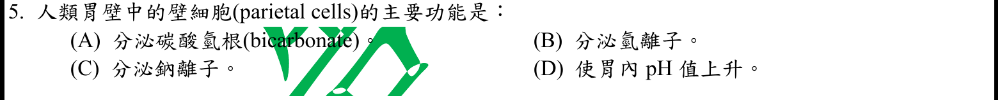
本地原卷PDF1 · 官方混科卷PDF18 · 官方原答案PDF1最下方生物表 · 已核對同年生物釋疑PDF26–27（未列本題）
官方採計：B 原答案：B
未列本輪取得的108年度釋疑PDF26–27；依同年答案採計，不宣稱沒有其他未取得公告
主分類：Ch41 Animal Nutrition
41.3 / Digestion in the Stomach
目錄行2711；條目起始印刷頁907；實際目錄 PDF46
主分類理由：41.3 / Digestion in the Stomach：胃的化學消化小節直接說明壁細胞分泌H+與胃酸形成。
次分類理由：無另列最小次條目；原題問胃壁細胞，B直接落胃化學消化；未因離子運輸泛化成細胞膜章。
科學說明：採B。壁細胞向胃腔分泌H+，降低胃內pH；胃腔的黏液與碳酸氫根保護不是本題所問的壁細胞主要功能。
來源涵蓋範圍：Campbell正文支援分類原理；原題限定、同年釋疑細節與最小目錄邊界逐題保留。
教材正文：印刷907／PDF956、印刷908／PDF957
補充來源：本題未另列課本外來源
Q06 · 42.3 / Blood Pressure 正式分類
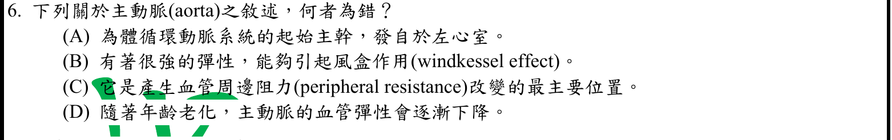
本地原卷PDF1 · 官方混科卷PDF18 · 官方原答案PDF1最下方生物表 · 已核對同年生物釋疑PDF26–27（未列本題）
官方採計：C 原答案：C
未列本輪取得的108年度釋疑PDF26–27；依同年答案採計，不宣稱沒有其他未取得公告
主分類：Ch42 Circulation and Gas Exchange
42.3 / Blood Pressure
目錄行2789；條目起始印刷頁930；實際目錄 PDF46
次分類：Ch42 Circulation and Gas Exchange
42.3 / Blood Vessel Structure and Function
目錄行2783；條目起始印刷頁929；實際目錄 PDF46
主分類理由：42.3 / Blood Pressure：判斷主動脈是否為周邊阻力主要調節部位，核心在血壓與小動脈管徑調控。
次分類理由：42.3 / Blood Vessel Structure and Function：血管構造與功能說明彈性動脈承受壓力並以彈性回縮維持血流。
科學說明：採C。主動脈由左心室接出，彈性伸展與回縮可緩衝脈動；主要可變阻力來自小動脈而非主動脈。Windkessel是題文用語，Campbell以彈性回縮描述同一功能；原題老化敘述保留，不以它取代阻力判別。
來源涵蓋範圍：Campbell正文支援分類原理；原題限定、同年釋疑細節與最小目錄邊界逐題保留。
教材正文：印刷929／PDF978、印刷930／PDF979、印刷931／PDF980
補充來源：本題未另列課本外來源
Q07 · 48.3 / Graded Potentials and Action Potentials 正式分類
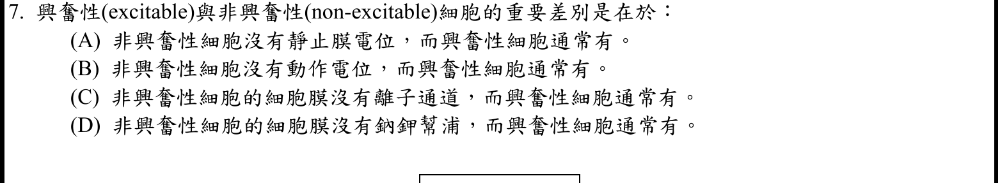
本地原卷PDF1 · 官方混科卷PDF18 · 官方原答案PDF1最下方生物表 · 已核對同年生物釋疑PDF26–27（未列本題）
官方採計：B 原答案：B
未列本輪取得的108年度釋疑PDF26–27；依同年答案採計，不宣稱沒有其他未取得公告
主分類：Ch48 Neurons, Synapses, and Signaling
48.3 / Graded Potentials and Action Potentials
目錄行3206；條目起始印刷頁1073；實際目錄 PDF48
次分類：Ch48 Neurons, Synapses, and Signaling
48.2 / Formation of the Resting Potential
目錄行3193；條目起始印刷頁1070；實際目錄 PDF48
主分類理由：48.3 / Graded Potentials and Action Potentials：興奮性細胞的判別在能否產生動作電位，歸入動作電位的主要訊息功能。
次分類理由：48.2 / Formation of the Resting Potential：靜止膜電位節用以排除非興奮性細胞一概沒有膜電位、幫浦或通道的說法。
科學說明：採B。興奮性細胞通常能在適當刺激下產生動作電位；非興奮性細胞仍可具有靜止膜電位、離子通道與鈉鉀幫浦，故A、C、D不成立。
來源涵蓋範圍：Campbell正文支援分類原理；原題限定、同年釋疑細節與最小目錄邊界逐題保留。
教材正文：印刷1069／PDF1118、印刷1070／PDF1119、印刷1072／PDF1121、印刷1073／PDF1122
補充來源：本題未另列課本外來源
Q08 · 42.4 / Blood Composition and Function 正式分類
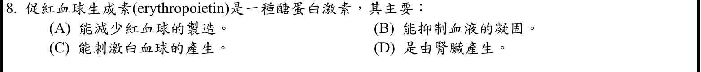
本地原卷PDF2 · 官方混科卷PDF19 · 官方原答案PDF1最下方生物表 · 已核對同年生物釋疑PDF26–27（未列本題）
官方採計：D 原答案：D
未列本輪取得的108年度釋疑PDF26–27；依同年答案採計，不宣稱沒有其他未取得公告
主分類：Ch42 Circulation and Gas Exchange
42.4 / Blood Composition and Function
目錄行2802；條目起始印刷頁934；實際目錄 PDF46
主分類理由：42.4 / Blood Composition and Function：血液組成與功能條目內的造血與EPO調節，直接涵蓋腎臟分泌促紅血球生成素。
次分類理由：無另列最小次條目；EPO腎臟來源與造血有直接正文，真實目錄最小為Blood Composition and Function；Cellular Elements只是正文子題，不創目錄ID。
科學說明：採D。腎臟為成人EPO的主要來源，EPO促進紅血球生成；不是以抑制紅血球、刺激白血球或抑制凝血為其主要作用。題目說主要，未排除其他發育階段或組織來源。
來源涵蓋範圍：Campbell正文支援分類原理；原題限定、同年釋疑細節與最小目錄邊界逐題保留。
教材正文：印刷934／PDF983、印刷935／PDF984、印刷936／PDF985、印刷937／PDF986
補充來源：本題未另列課本外來源
另行比較：一般激素內分泌或血球生成
EPO腎臟來源與造血有直接正文，真實目錄最小為Blood Composition and Function；Cellular Elements只是正文子題，不創目錄ID。
結論：證據確認，分類疑義已解決。完整覆核紀錄
Q09 · 36.4 / Mechanisms of Stomatal Opening and Closing 正式分類
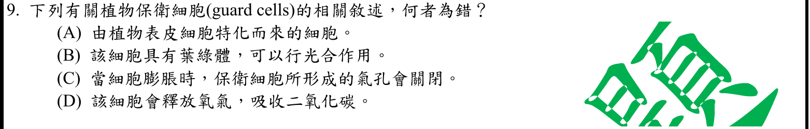
本地原卷PDF2 · 官方混科卷PDF19 · 官方原答案PDF1最下方生物表 · 已核對同年生物釋疑PDF26–27（未列本題）
官方採計：C 原答案：C
未列本輪取得的108年度釋疑PDF26–27；依同年答案採計，不宣稱沒有其他未取得公告
主分類：Ch36 Resource Acquisition and Transport in Vascular Plants
36.4 / Mechanisms of Stomatal Opening and Closing
目錄行2394；條目起始印刷頁797；實際目錄 PDF45
次分類：Ch35 Vascular Plant Structure, Growth, and Development
35.1 / Dermal, Vascular, and Ground Tissues
目錄行2286；條目起始印刷頁762；實際目錄 PDF44
主分類理由：36.4 / Mechanisms of Stomatal Opening and Closing：膨壓改變控制氣孔開閉，應以氣孔開閉機制為主條目。
次分類理由：35.1 / Dermal, Vascular, and Ground Tissues：真實最小目錄的組織系統條目提供保衛細胞為表皮特化細胞的來源。
科學說明：採C。保衛細胞膨脹、膨壓上升使氣孔張開，而失水鬆弛使之關閉；797頁圖支持。保衛細胞具有葉綠體。D釋氧吸CO2僅在光合作用的脈絡理解，不能泛化成任何時間的淨氣體通量。
來源涵蓋範圍：Campbell正文支援分類原理；原題限定、同年釋疑細節與最小目錄邊界逐題保留。
教材正文：印刷762／PDF811、印刷763／PDF812、印刷796／PDF845、印刷797／PDF846、印刷798／PDF847
補充來源：本題未另列課本外來源
Q10 · 50.2 / Hearing and Equilibrium in Mammals 正式分類
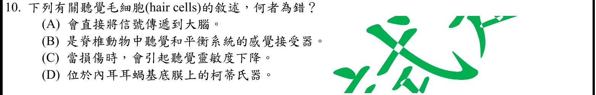
本地原卷PDF2 · 官方混科卷PDF19 · 官方原答案PDF1最下方生物表 · 同年釋疑PDF26
官方採計：A 原答案：A
108年度7/1審議會議釋疑維持原答案A
主分類：Ch50 Sensory and Motor Mechanisms
50.2 / Hearing and Equilibrium in Mammals
目錄行3351；條目起始印刷頁1112；實際目錄 PDF49
次分類：Ch50 Sensory and Motor Mechanisms
50.1 / Transmission
目錄行3332；條目起始印刷頁1109；實際目錄 PDF49
主分類理由：50.2 / Hearing and Equilibrium in Mammals：毛細胞、柯蒂氏器及耳蝸訊號中繼直接落在脊椎動物聽覺與平衡小節。
次分類理由：50.1 / Transmission：感覺傳遞至CNS的小節區分受器電位與經傳入神經元傳送，解釋「直接」錯誤。
科學說明：採A；同年釋疑PDF26維持A。耳蝸毛細胞經傳入感覺神經元傳遞，不能直接把訊息送到大腦。原題把聽覺毛細胞與廣義前庭毛細胞合述；釋疑又說半規管和耳蝸共同影響平衡，應保留其措辭但區分耳蝸的聽覺與前庭的平衡功能。Vander13e頁碼只讀到釋疑所引內容。
來源涵蓋範圍：Campbell正文支援分類原理；原題限定、同年釋疑細節與最小目錄邊界逐題保留。
教材正文：印刷1109／PDF1158、印刷1112／PDF1161、印刷1113／PDF1162、印刷1114／PDF1163、印刷1115／PDF1164、印刷1116／PDF1165
補充來源：本題未另列課本外來源
另行比較：耳蝸與前庭毛細胞合稱及直接傳到腦
重開Q10完整裁圖、核對PDF26釋疑及教材1113–1116；A經傳入神經中繼，釋疑耳蝸平衡措辭另記。
結論：證據確認，分類疑義已解決。完整覆核紀錄
Q11 · 45.3 / Adrenal Hormones: Response to Stress 正式分類
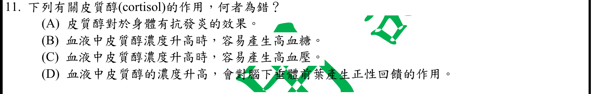
本地原卷PDF2 · 官方混科卷PDF19 · 官方原答案PDF1最下方生物表 · 已核對同年生物釋疑PDF26–27（未列本題）
官方採計：D 原答案：D
未列本輪取得的108年度釋疑PDF26–27；依同年答案採計，不宣稱沒有其他未取得公告
主分類：Ch45 Hormones and the Endocrine System
45.3 / Adrenal Hormones: Response to Stress
目錄行3039；條目起始印刷頁1012；實際目錄 PDF47
次分類：Ch45 Hormones and the Endocrine System
45.2 / Feedback Regulation
目錄行3020；條目起始印刷頁1005；實際目錄 PDF47
主分類理由：45.3 / Adrenal Hormones: Response to Stress：皮質醇為腎上腺糖皮質素，作用與過量效應直接屬腎上腺對壓力反應。
次分類理由：45.2 / Feedback Regulation：回饋調節小節建立內分泌負回饋原理，配合腎上腺正文核對皮質醇升高對HPA軸的作用。
科學說明：採D。正常HPA軸中皮質醇升高會抑制CRH與ACTH，屬負回饋；抗發炎、升血糖及過量可能伴高血壓均不支持D。Campbell的腎上腺分工不表示只有醛固酮影響血壓，NIDDK的Cushing資料補足皮質醇過量的高血壓範圍。
來源涵蓋範圍：Campbell提供列示分類原理；未直接涵蓋的細節由具名補充來源與同年釋疑支援，取得及實讀界線見來源紀錄。
教材正文：印刷1005／PDF1054、印刷1012／PDF1061、印刷1013／PDF1062、印刷1014／PDF1063
補充來源：S04
另行比較：皮質醇高血壓是否與醛固酮混淆
D正回饋為錯，腎上腺與Feedback Regulation小節共同支持負回饋；NIDDK補足皮質醇過量高血壓。
結論：證據確認，分類疑義已解決。完整覆核紀錄
Q12 · 48.2 / Formation of the Resting Potential 正式分類
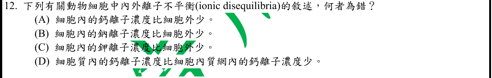
本地原卷PDF2 · 官方混科卷PDF19 · 官方原答案PDF1最下方生物表 · 已核對同年生物釋疑PDF26–27（未列本題）
官方採計：C 原答案：C
未列本輪取得的108年度釋疑PDF26–27；依同年答案採計，不宣稱沒有其他未取得公告
主分類：Ch48 Neurons, Synapses, and Signaling
48.2 / Formation of the Resting Potential
目錄行3193；條目起始印刷頁1070；實際目錄 PDF48
次分類：Ch06 A Tour of the Cell
6.4 / The Endoplasmic Reticulum: Biosynthetic Factory
目錄行343；條目起始印刷頁104；實際目錄 PDF36
主分類理由：48.2 / Formation of the Resting Potential：細胞內外Na與K濃度差是靜止電位所需的基本離子梯度。
次分類理由：6.4 / The Endoplasmic Reticulum: Biosynthetic Factory：內質網小節直接說明Ca由胞質泵入ER腔，補足胞內儲鈣區室的比較。
科學說明：採C。典型動物細胞內K較高、Na較低；游離胞質Ca低於細胞外及內質網腔。題文「細胞內鈣」應依游離胞質濃度理解，不等於把所有胞器儲鈣與結合鈣加總。
來源涵蓋範圍：Campbell正文支援分類原理；原題限定、同年釋疑細節與最小目錄邊界逐題保留。
教材正文：印刷104／PDF153、印刷105／PDF154、印刷1069／PDF1118、印刷1070／PDF1119、印刷1071／PDF1120
補充來源：本題未另列課本外來源
另行比較：全細胞鈣總量與游離胞質濃度
K內高外低排除C；Ca胞質及ER區室由104–105確認，避免把胞內總鈣當胞質游離鈣。
結論：證據確認，分類疑義已解決。完整覆核紀錄
Q13 · 6.4 / The Endoplasmic Reticulum: Biosynthetic Factory 正式分類
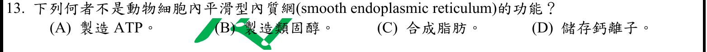
本地原卷PDF2 · 官方混科卷PDF19 · 官方原答案PDF1最下方生物表 · 已核對同年生物釋疑PDF26–27（未列本題）
官方採計：A 原答案：A
未列本輪取得的108年度釋疑PDF26–27；依同年答案採計，不宣稱沒有其他未取得公告
主分類：Ch06 A Tour of the Cell
6.4 / The Endoplasmic Reticulum: Biosynthetic Factory
目錄行343；條目起始印刷頁104；實際目錄 PDF36
主分類理由：6.4 / The Endoplasmic Reticulum: Biosynthetic Factory：平滑ER的脂質、類固醇合成與Ca儲存皆在內質網最小目錄條目。
次分類理由：無另列最小次條目；實際目錄最小是ER Biosynthetic Factory，A非ER功能；B–D已在104–105全文及圖確認。
科學說明：採A。104–105頁直接列出平滑ER的脂質與類固醇合成、解毒及Ca儲存；ATP製造不是其列示功能。Functions of Smooth ER是正文子標題而非本地真實目錄條目，保留在ER條目內。
來源涵蓋範圍：Campbell正文支援分類原理；原題限定、同年釋疑細節與最小目錄邊界逐題保留。
教材正文：印刷104／PDF153、印刷105／PDF154
補充來源：本題未另列課本外來源
另行比較：正文Smooth ER能否自創更小目錄
實際目錄最小是ER Biosynthetic Factory，A非ER功能；B–D已在104–105全文及圖確認。
結論：證據確認，分類疑義已解決。完整覆核紀錄
Q14 · 41.5 / Regulation of Digestion 正式分類
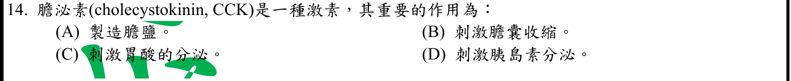
本地原卷PDF2 · 官方混科卷PDF19 · 官方原答案PDF1最下方生物表 · 已核對同年生物釋疑PDF26–27（未列本題）
官方採計：B 原答案：B
未列本輪取得的108年度釋疑PDF26–27；依同年答案採計，不宣稱沒有其他未取得公告
主分類：Ch41 Animal Nutrition
41.5 / Regulation of Digestion
目錄行2740；條目起始印刷頁915；實際目錄 PDF46
主分類理由：41.5 / Regulation of Digestion：CCK調控消化器官分泌與膽囊排膽，應歸消化調節而非一般脂肪分解。
次分類理由：無另列最小次條目；915圖41.22明示CCK刺激胆汁釋出，B採計；核心為Regulation of Digestion，其他激素不列主分類。
科學說明：採B。圖41.22顯示CCK促進膽囊排膽及胰消化酶分泌；肝臟製造膽鹽、膽囊儲存排出，兩者分開。原題用「膽泌素」與英文CCK，依英文與機轉判讀。
來源涵蓋範圍：Campbell正文支援分類原理；原題限定、同年釋疑細節與最小目錄邊界逐題保留。
教材正文：印刷908／PDF957、印刷915／PDF964
補充來源：本題未另列課本外來源
另行比較：CCK作用是膽囊排膽還是肝臟製膽
915圖41.22明示CCK刺激胆汁釋出，B採計；核心為Regulation of Digestion，其他激素不列主分類。
結論：證據確認，分類疑義已解決。完整覆核紀錄
Q15 · 42.2 / Maintaining the Heart’s Rhythmic Beat 正式分類
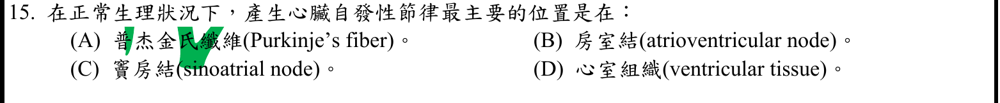
本地原卷PDF2 · 官方混科卷PDF19 · 官方原答案PDF1最下方生物表 · 已核對同年生物釋疑PDF26–27（未列本題）
官方採計：C 原答案：C
未列本輪取得的108年度釋疑PDF26–27；依同年答案採計，不宣稱沒有其他未取得公告
主分類：Ch42 Circulation and Gas Exchange
42.2 / Maintaining the Heart’s Rhythmic Beat
本地文字目錄L2776為Maintaining the Heart’s Rhythms；本輪依12e PDF46目錄及印刷928正文採真實標題，原文字目錄保留。 目錄行2776；條目起始印刷頁928；實際目錄 PDF46
主分類理由：42.2 / Maintaining the Heart’s Rhythmic Beat：竇房結起搏與傳導順序直接屬維持心臟節律的小節。
次分類理由：無另列最小次條目；限定正常主要起搏點，C竇房結；同Q2使用PDF真實Rhythmic Beat標題。
科學說明：採C。正常生理下竇房結為主要起搏點，房室結造成傳導延遲並向心室傳遞；不能因其他位置有潛在自動性而更改正常情境。採PDF真實Rhythmic Beat標題，保留文字目錄異文。
來源涵蓋範圍：Campbell正文支援分類原理；原題限定、同年釋疑細節與最小目錄邊界逐題保留。
教材正文：印刷928／PDF977、印刷929／PDF978
補充來源：本題未另列課本外來源
另行比較：竇房結與房室結均能自動放電
限定正常主要起搏點，C竇房結；同Q2使用PDF真實Rhythmic Beat標題。
結論：證據確認，分類疑義已解決。完整覆核紀錄
Q16 · 37.2 / Essential Elements 正式分類
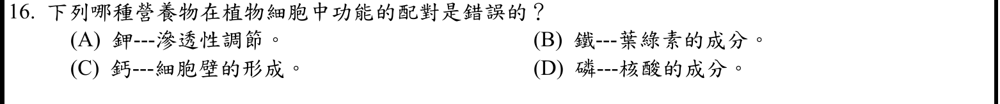
本地原卷PDF2 · 官方混科卷PDF19 · 官方原答案PDF1最下方生物表 · 已核對同年生物釋疑PDF26–27（未列本題）
官方採計：B 原答案：B
未列本輪取得的108年度釋疑PDF26–27；依同年答案採計，不宣稱沒有其他未取得公告
主分類：Ch37 Soil and Plant Nutrition
37.2 / Essential Elements
目錄行2450；條目起始印刷頁810；實際目錄 PDF45
主分類理由：37.2 / Essential Elements：必需元素條目內表37.1直接比較巨量與微量元素功能，判別四種元素配對。
次分類理由：無另列最小次條目；811表分開Mg成分與Fe參與合成，B錯；真實最小目錄為Essential Elements，巨量與微量是正文分類。
科學說明：採B。葉綠素的金屬成分為Mg，Fe參與葉綠素合成與其他代謝但不是葉綠素分子中央成分；811頁表同時支持K滲透調節、Ca細胞壁、P核酸。
來源涵蓋範圍：Campbell正文支援分類原理；原題限定、同年釋疑細節與最小目錄邊界逐題保留。
教材正文：印刷810／PDF859、印刷811／PDF860
補充來源：本題未另列課本外來源
另行比較：Fe參與葉綠素合成能否稱其分子成分
811表分開Mg成分與Fe參與合成，B錯；真實最小目錄為Essential Elements，巨量與微量是正文分類。
結論：證據確認，分類疑義已解決。完整覆核紀錄
Q17 · 42.3 / Blood Pressure 正式分類
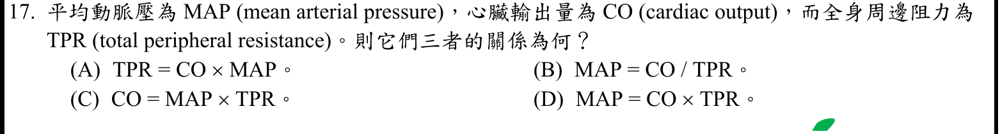
本地原卷PDF3 · 官方混科卷PDF20 · 官方原答案PDF1最下方生物表 · 已核對同年生物釋疑PDF26–27（未列本題）
官方採計：D 原答案：D
未列本輪取得的108年度釋疑PDF26–27；依同年答案採計，不宣稱沒有其他未取得公告
主分類：Ch42 Circulation and Gas Exchange
42.3 / Blood Pressure
目錄行2789；條目起始印刷頁930；實際目錄 PDF46
次分類：Ch42 Circulation and Gas Exchange
42.2 / The Mammalian Heart: A Closer Look
目錄行2773；條目起始印刷頁926；實際目錄 PDF46
主分類理由：42.3 / Blood Pressure：平均動脈壓與周邊阻力的數量關係，以血壓條目為主。
次分類理由：42.2 / The Mammalian Heart: A Closer Look：哺乳類循環與心臟輸出量定義補足CO為每分鐘射血量的關係。
科學說明：採D。由壓差＝流量×阻力，MAP−CVP＝CO×TPR；忽略中心靜脈壓且單位一致時，題目採MAP≈CO×TPR。原選項等號保留，科學說明標示近似及CVP條件，不能當作所有情境的精確式。
來源涵蓋範圍：Campbell提供列示分類原理；未直接涵蓋的細節由具名補充來源與同年釋疑支援，取得及實讀界線見來源紀錄。
教材正文：印刷927／PDF976、印刷930／PDF979、印刷931／PDF980
補充來源：S03
另行比較：MAP等式是否漏CVP
重新用流量＝壓差/阻力推導，D為忽略CVP近似；重開完整選項，保留原等號及單位條件。
結論：證據確認，分類疑義已解決。完整覆核紀錄
Q18 · 23.2 / The Hardy-Weinberg Equation 正式分類
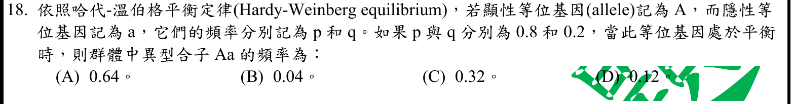
本地原卷PDF3 · 官方混科卷PDF20 · 官方原答案PDF1最下方生物表 · 已核對同年生物釋疑PDF26–27（未列本題）
官方採計：C 原答案：C
未列本輪取得的108年度釋疑PDF26–27；依同年答案採計，不宣稱沒有其他未取得公告
主分類：Ch23 The Evolution of Populations
23.2 / The Hardy-Weinberg Equation
目錄行1445；條目起始印刷頁490；實際目錄 PDF41
主分類理由：23.2 / The Hardy-Weinberg Equation：題目給等位基因頻率並要求平衡族群的異型合子比例，直接使用Hardy–Weinberg方程。
次分類理由：無另列最小次條目；2pq獨立重算0.32，C；僅此最小方程條目已足，不增列泛遺傳學。
科學說明：採C。重新計算2pq＝2×0.8×0.2＝0.32；p²＝0.64和q²＝0.04分別是兩種同型合子比例。不能把顯性表型比例當成Aa頻率。
來源涵蓋範圍：Campbell正文支援分類原理；原題限定、同年釋疑細節與最小目錄邊界逐題保留。
教材正文：印刷490／PDF539、印刷491／PDF540、印刷492／PDF541
補充來源：本題未另列課本外來源
Q19 · 17.4 / Molecular Components of Translation 正式分類
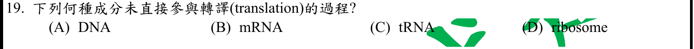
本地原卷PDF3 · 官方混科卷PDF20 · 官方原答案PDF1最下方生物表 · 已核對同年生物釋疑PDF26–27（未列本題）
官方採計：A 原答案：A
未列本輪取得的108年度釋疑PDF26–27；依同年答案採計，不宣稱沒有其他未取得公告
主分類：Ch17 Gene Expression: From Gene to Protein
17.4 / Molecular Components of Translation
目錄行1069；條目起始印刷頁348；實際目錄 PDF39
次分類：Ch17 Gene Expression: From Gene to Protein
17.1 / Basic Principles of Transcription and Translation
目錄行1039；條目起始印刷頁337；實際目錄 PDF39
主分類理由：17.4 / Molecular Components of Translation：題目辨認直接參與轉譯的分子元件，以轉譯分子組件最小條目為主。
次分類理由：17.1 / Basic Principles of Transcription and Translation：轉錄與轉譯基本原理釐清DNA作為轉錄模板的間接角色。
科學說明：採A。轉譯以mRNA為模板、tRNA帶胺基酸、核糖體催化；DNA先提供轉錄資訊但不直接加入題設轉譯過程。「未直接」不表示DNA與蛋白質合成毫無關係。
來源涵蓋範圍：Campbell正文支援分類原理；原題限定、同年釋疑細節與最小目錄邊界逐題保留。
教材正文：印刷337／PDF386、印刷338／PDF387、印刷348／PDF397、印刷349／PDF398、印刷350／PDF399
補充來源：本題未另列課本外來源
另行比較：DNA間接控制是否算直接轉譯
完整選項只有DNA不是轉譯直接元件；主Molecular Components of Translation，次基本原理交代轉錄。
結論：證據確認，分類疑義已解決。完整覆核紀錄
Q20 · 45.1 / Intercellular Information Flow 正式分類
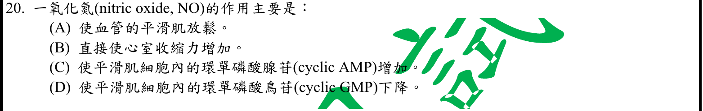
本地原卷PDF3 · 官方混科卷PDF20 · 官方原答案PDF1最下方生物表 · 已核對同年生物釋疑PDF26–27（未列本題）
官方採計：A 原答案：A
未列本輪取得的108年度釋疑PDF26–27；依同年答案採計，不宣稱沒有其他未取得公告
主分類：Ch45 Hormones and the Endocrine System
45.1 / Intercellular Information Flow
目錄行2998；條目起始印刷頁1000；實際目錄 PDF47
次分類：Ch42 Circulation and Gas Exchange
42.3 / Blood Pressure
目錄行2789；條目起始印刷頁930；實際目錄 PDF46
主分類理由：45.1 / Intercellular Information Flow：NO作為局部調節者作用於鄰近血管平滑肌，直接屬旁分泌與自分泌訊息。
次分類理由：42.3 / Blood Pressure：血壓小節支援血管平滑肌放鬆與血管舒張的器官效應。
科學說明：採A。NO促進血管平滑肌放鬆；經guanylyl cyclase使cGMP增加，並非題目C的cAMP增加或D的cGMP下降。Campbell1001頁提供局部NO訊號與舒張，cGMP細節由Klabunde原作者教材補足。
來源涵蓋範圍：Campbell提供列示分類原理；未直接涵蓋的細節由具名補充來源與同年釋疑支援，取得及實讀界線見來源紀錄。
教材正文：印刷930／PDF979、印刷931／PDF980、印刷1000／PDF1049、印刷1001／PDF1050、印刷1082／PDF1131
補充來源：S12
另行比較：NO的cGMP與cAMP是否混用
A為直接器官效應，原作者教材39–41行支持cGMP上升；局部訊息主分類和血壓次分類互補。
結論：證據確認，分類疑義已解決。完整覆核紀錄
Q21 · 44.3 / Survey of Excretory Systems 正式分類
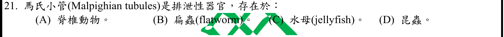
本地原卷PDF3 · 官方混科卷PDF20 · 官方原答案PDF1最下方生物表 · 已核對同年生物釋疑PDF26–27（未列本題）
官方採計：D 原答案：D
未列本輪取得的108年度釋疑PDF26–27；依同年答案採計，不宣稱沒有其他未取得公告
主分類：Ch44 Osmoregulation and Excretion
44.3 / Survey of Excretory Systems
目錄行2967；條目起始印刷頁984；實際目錄 PDF47
主分類理由：44.3 / Survey of Excretory Systems：排泄系統概覽為真實最小目錄，正文在此比較昆蟲馬氏小管與其他動物排泄器官。
次分類理由：無另列最小次條目；D為四選項正確項，不主張唯有昆蟲；真實最小目錄Survey of Excretory Systems，馬氏小管是其正文部分。
科學說明：採D。馬氏小管與昆蟲腸道合作排氮、維持水鹽；扁蟲典型為原腎管系統，水母與脊椎動物不符合題設。部分其他陸生節肢動物也有馬氏小管，題目不是主張只有昆蟲。
來源涵蓋範圍：Campbell正文支援分類原理；原題限定、同年釋疑細節與最小目錄邊界逐題保留。
教材正文：印刷984／PDF1033、印刷985／PDF1034、印刷986／PDF1035
補充來源：本題未另列課本外來源
另行比較：昆蟲與其他陸生節肢動物範圍
D為四選項正確項，不主張唯有昆蟲；真實最小目錄Survey of Excretory Systems，馬氏小管是其正文部分。
結論：證據確認，分類疑義已解決。完整覆核紀錄
Q22 · 50.3 / The Vertebrate Visual System 正式分類
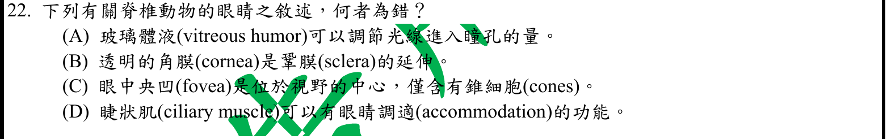
本地原卷PDF3 · 官方混科卷PDF20 · 官方原答案PDF1最下方生物表 · 已核對同年生物釋疑PDF26–27（未列本題）
官方採計：A 原答案：A
未列本輪取得的108年度釋疑PDF26–27；依同年答案採計，不宣稱沒有其他未取得公告
主分類：Ch50 Sensory and Motor Mechanisms
50.3 / The Vertebrate Visual System
目錄行3364；條目起始印刷頁1119；實際目錄 PDF49
主分類理由：50.3 / The Vertebrate Visual System：瞳孔、虹膜、玻璃體、角膜及中央凹都屬脊椎動物視覺系統的功能。
次分類理由：無另列最小次條目；重開Q22並讀1122調適段及圖；1119正文指回人眼圖，主Vertebrate Visual System正確；A與虹膜混淆。
科學說明：採A。調節進光量的是虹膜改變瞳孔大小，玻璃體並非此調節器。1118頁人眼圖提前跨入該條目的圖示，1119正文指回圖50.17；1122頁補足睫狀肌調適與中央凹的視錐。原題C的「僅含錐細胞」指其光受器組成，並非中央凹沒有任何其他細胞。
來源涵蓋範圍：Campbell正文支援分類原理；原題限定、同年釋疑細節與最小目錄邊界逐題保留。
教材正文：印刷1118／PDF1167、印刷1119／PDF1168、印刷1120／PDF1169、印刷1121／PDF1170、印刷1122／PDF1171
補充來源：本題未另列課本外來源
另行比較：1118圖在1119主標之前及fovea限定
重開Q22並讀1122調適段及圖；1119正文指回人眼圖，主Vertebrate Visual System正確；A與虹膜混淆。
結論：證據確認，分類疑義已解決。完整覆核紀錄
Q23 · 44.4 / Solute Gradients and Water Conservation 正式分類
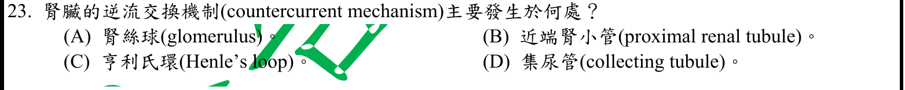
本地原卷PDF3 · 官方混科卷PDF20 · 官方原答案PDF1最下方生物表 · 已核對同年生物釋疑PDF26–27（未列本題）
官方採計：C 原答案：C
未列本輪取得的108年度釋疑PDF26–27；依同年答案採計，不宣稱沒有其他未取得公告
主分類：Ch44 Osmoregulation and Excretion
44.4 / Solute Gradients and Water Conservation
目錄行2977；條目起始印刷頁989；實際目錄 PDF47
次分類：Ch44 Osmoregulation and Excretion
44.4 / From Blood Filtrate to Urine: A Closer Look
目錄行2974；條目起始印刷頁987；實際目錄 PDF47
主分類理由：44.4 / Solute Gradients and Water Conservation：亨利氏環逆流及髓質滲透梯度屬尿液濃縮溶質梯度的小節。
次分類理由：44.4 / From Blood Filtrate to Urine: A Closer Look：腎元功能分區與水通透性用來辨識升支、降支及集尿管角色。
科學說明：採C；同年化學Q23的C或D更正不適用本題。題文中文「逆流交換」較寬泛，英語僅countercurrent mechanism：亨利氏環主要為逆流倍增，直小血管為逆流交換，兩者不可完全等同。選項所問位置依官方與濃縮機轉歸亨利氏環。
來源涵蓋範圍：Campbell正文支援分類原理；原題限定、同年釋疑細節與最小目錄邊界逐題保留。
教材正文：印刷987／PDF1036、印刷988／PDF1037、印刷989／PDF1038、印刷990／PDF1039、印刷991／PDF1040
補充來源：本題未另列課本外來源
另行比較：countercurrent exchange與multiplier
中文題文與英文的精細範圍分開，亨利氏環倍增及直小血管交換保留；官方生物C未被化學同號更正污染。
結論：證據確認，分類疑義已解決。完整覆核紀錄
Q24 · 42.5 / Lungs 正式分類
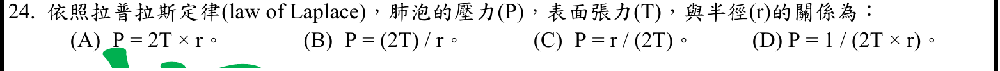
本地原卷PDF3 · 官方混科卷PDF20 · 官方原答案PDF1最下方生物表 · 已核對同年生物釋疑PDF26–27（未列本題）
官方採計：B 原答案：B
未列本輪取得的108年度釋疑PDF26–27；依同年答案採計，不宣稱沒有其他未取得公告
主分類：Ch42 Circulation and Gas Exchange
42.5 / Lungs
目錄行2827；條目起始印刷頁942；實際目錄 PDF46
次分類：Ch42 Circulation and Gas Exchange
42.6 / How a Mammal Breathes
目錄行2840；條目起始印刷頁945；實際目錄 PDF46
主分類理由：42.5 / Lungs：肺泡氣液介面表面張力及界面活性劑在哺乳類呼吸小節，公式需同題科學補充。
次分類理由：42.6 / How a Mammal Breathes：負壓呼吸小節補充跨肺壓與肺泡膨脹的壓力背景。
科學說明：採B。單一球形氣液介面的Laplace壓差ΔP＝2T/r；由半球受力平衡ΔPπr²＝2πrT獨立重算得到。原題以P寫肺泡壓力，應限理想化跨界面壓差，不能誤用肥皂泡雙界面的4T/r；Duke教材PDF8直接支持。
來源涵蓋範圍：Campbell提供列示分類原理；未直接涵蓋的細節由具名補充來源與同年釋疑支援，取得及實讀界線見來源紀錄。
教材正文：印刷942／PDF991、印刷943／PDF992、印刷944／PDF993、印刷945／PDF994
補充來源：S05
另行比較：單介面2T/r或雙介面4T/r
重開Q24，半球力平衡獨立推導2T/r；Duke8支持，肺泡界面與呼吸壓差分列主次。
結論：證據確認，分類疑義已解決。完整覆核紀錄
Q25 · 43.4 / Cancer and Immunity 正式分類
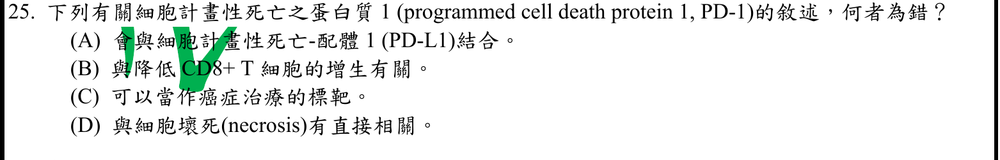
本地原卷PDF3 · 官方混科卷PDF20 · 官方原答案PDF1最下方生物表 · 已核對同年生物釋疑PDF26–27（未列本題）
官方採計：D 原答案：D
未列本輪取得的108年度釋疑PDF26–27；依同年答案採計，不宣稱沒有其他未取得公告
主分類：Ch43 The Immune System
43.4 / Cancer and Immunity
目錄行2930；條目起始印刷頁974；實際目錄 PDF47
主分類理由：43.4 / Cancer and Immunity：PD-1/PD-L1與腫瘤免疫抑制及治療靶點相關，癌症與免疫為最貼近的真實最小目錄。
次分類理由：無另列最小次條目；重開Q25完整四選項，關鍵為PD1檢查點與癌症免疫；D不能由名稱推壞死，教材缺具名機制由NCI及研究補足。
科學說明：採D。PD-1為抑制性免疫檢查點，可結合PD-L1、抑制T細胞反應並成為免疫治療標的；名稱含programmed cell death不能推成與壞死直接相關。Campbell974頁的Cancer and Immunity重點較窄，沒有PD-1機制；NCI及原始研究補足，不假稱課本載有此蛋白。
來源涵蓋範圍：Campbell提供列示分類原理；未直接涵蓋的細節由具名補充來源與同年釋疑支援，取得及實讀界線見來源紀錄。
教材正文：印刷974／PDF1023、印刷975／PDF1024
補充來源：S06
另行比較：名稱programmed cell death是否應歸凋亡
重開Q25完整四選項，關鍵為PD1檢查點與癌症免疫；D不能由名稱推壞死，教材缺具名機制由NCI及研究補足。
結論：證據確認，分類疑義已解決。完整覆核紀錄
Q26 · 9.3 / The Citric Acid Cycle 正式分類
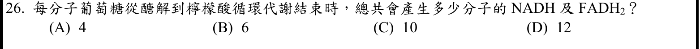
本地原卷PDF3 · 官方混科卷PDF20 · 官方原答案PDF1最下方生物表 · 已核對同年生物釋疑PDF26–27（未列本題）
官方採計：D 原答案：D
未列本輪取得的108年度釋疑PDF26–27；依同年答案採計，不宣稱沒有其他未取得公告
主分類：Ch09 Cellular Respiration and Fermentation
9.3 / The Citric Acid Cycle
目錄行575；條目起始印刷頁172；實際目錄 PDF37
次分類：Ch09 Cellular Respiration and Fermentation
9.2 / Glycolysis harvests chemical energy by oxidizing glucose to pyruvate
目錄行564；條目起始印刷頁170；實際目錄 PDF37
次分類：Ch09 Cellular Respiration and Fermentation
9.3 / Oxidation of Pyruvate to Acetyl CoA
目錄行572；條目起始印刷頁171；實際目錄 PDF37
主分類理由：9.3 / The Citric Acid Cycle：每分子葡萄糖兩次檸檬酸循環的NADH、FADH2產量是加總的終點。
次分類理由：9.2 / Glycolysis harvests chemical energy by oxidizing glucose to pyruvate：醣解提供每葡萄糖2NADH，為總數必要前段；9.3 / Oxidation of Pyruvate to Acetyl CoA：丙酮酸氧化提供每葡萄糖2NADH，不能漏掉循環前的反應。
科學說明：採D。獨立加總：醣解2NADH；兩個丙酮酸氧化2NADH；兩輪TCA共6NADH＋2FADH2，合計10NADH＋2FADH2＝12。不是只數NADH的10，也不是ATP數。兩個同章最小次條目照存，Ch09章級只計一次。
來源涵蓋範圍：Campbell正文支援分類原理；原題限定、同年釋疑細節與最小目錄邊界逐題保留。
教材正文：印刷170／PDF219、印刷171／PDF220、印刷172／PDF221、印刷173／PDF222、印刷174／PDF223、印刷178／PDF227
補充來源：本題未另列課本外來源
另行比較：只數NADH或漏丙酮酸氧化
每葡萄糖2＋2＋6 NADH及2 FADH2＝12，D；主TCA、次醣解及丙酮酸氧化三個同章節點照存。
結論：證據確認，分類疑義已解決。完整覆核紀錄
Q27 · 47.2 / The Cytoskeleton in Morphogenesis 正式分類
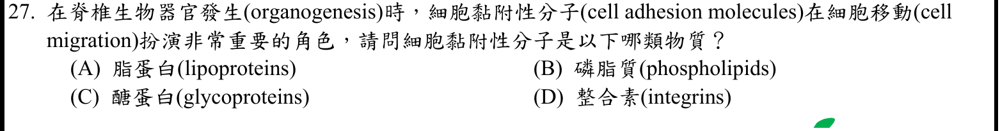
本地原卷PDF4 · 官方混科卷PDF21 · 官方原答案PDF1最下方生物表 · 同年釋疑PDF26
官方採計：C 原答案：C
108年度7/1審議會議釋疑維持原答案C
主分類：Ch47 Animal Development
47.2 / The Cytoskeleton in Morphogenesis
目錄行3153；條目起始印刷頁1056；實際目錄 PDF48
次分類：Ch06 A Tour of the Cell
6.7 / The Extracellular Matrix (ECM) of Animal Cells
目錄行391；條目起始印刷頁118；實際目錄 PDF36
主分類理由：47.2 / The Cytoskeleton in Morphogenesis：1056頁在形態發生的細胞骨架條目內直接討論CAM與細胞遷移，較器官發生情境更精確。
次分類理由：6.7 / The Extracellular Matrix (ECM) of Animal Cells：動物細胞外基質及integrin連結說明整合素是特定細胞黏附蛋白，非全體CAM的物質類別。
科學說明：採C；同年釋疑PDF26維持C並引11e印刷1054。本輪12e印刷1056明載CAM為跨膜醣蛋白；integrins是其中成員，不能以D取代上位物質分類。器官發生是題幹情境，主分類採實際CAM解釋所在的The Cytoskeleton in Morphogenesis。
來源涵蓋範圍：Campbell正文支援分類原理；原題限定、同年釋疑細節與最小目錄邊界逐題保留。
教材正文：印刷118／PDF167、印刷119／PDF168、印刷1054／PDF1103、印刷1055／PDF1104、印刷1056／PDF1105、印刷1057／PDF1106
補充來源：本題未另列課本外來源
另行比較：器官發生標題與CAM直接段落
1056全頁確認CAM段位於The Cytoskeleton in Morphogenesis；PDF26釋疑支持C，integrin與glycoprotein是層級差異。
結論：證據確認，分類疑義已解決。完整覆核紀錄
Q28 · 9.3 / Oxidation of Pyruvate to Acetyl CoA 正式分類
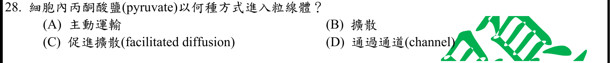
本地原卷PDF4 · 官方混科卷PDF21 · 官方原答案PDF1最下方生物表 · 同年釋疑PDF27
官方採計：A 原答案：A
108年度7/1審議會議釋疑維持原答案A
主分類：Ch09 Cellular Respiration and Fermentation
9.3 / Oxidation of Pyruvate to Acetyl CoA
目錄行572；條目起始印刷頁171；實際目錄 PDF37
次分類：Ch07 Membrane Structure and Function
7.4 / Cotransport: Coupled Transport by a Membrane Protein
目錄行456；條目起始印刷頁138；實際目錄 PDF36
主分類理由：9.3 / Oxidation of Pyruvate to Acetyl CoA：丙酮酸進入粒線體接上氧化為acetyl CoA，直接是丙酮酸氧化最小條目的前置步驟。
次分類理由：7.4 / Cotransport: Coupled Transport by a Membrane Protein：同向共運輸的能量耦合概念補充主動運輸不一定由運輸蛋白直接水解ATP。
科學說明：採A；同年釋疑PDF27引11e圖9.10維持A。12e印刷171正文也明寫active transport，圖9.9說明運輸蛋白；版次圖號不同但本題採計一致。MPC位於粒線體內膜；原始研究的ΔpH耦合機制支持次級主動運輸，不能把外膜通道或載體存在本身當成促進擴散的充分理由。
來源涵蓋範圍：Campbell提供列示分類原理；未直接涵蓋的細節由具名補充來源與同年釋疑支援，取得及實讀界線見來源紀錄。
教材正文：印刷138／PDF187、印刷171／PDF220、印刷172／PDF221
補充來源：S07
另行比較：transport protein是否必為促進擴散
重開Q28，171全文明寫active transport；同年PDF27一致。目錄選丙酮酸氧化，能量耦合列共運輸次目。
結論：證據確認，分類疑義已解決。完整覆核紀錄
Q29 · 10.4 / The Calvin cycle uses the chemical energy of ATP and NADPH to reduce CO2 to sugar 正式分類
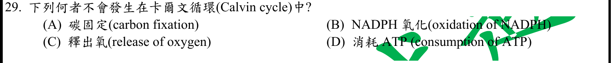
本地原卷PDF4 · 官方混科卷PDF21 · 官方原答案PDF1最下方生物表 · 已核對同年生物釋疑PDF26–27（未列本題）
官方採計：C 原答案：C
未列本輪取得的108年度釋疑PDF26–27；依同年答案採計，不宣稱沒有其他未取得公告
主分類：Ch10 Photosynthesis
10.4 / The Calvin cycle uses the chemical energy of ATP and NADPH to reduce CO2 to sugar
目錄行665；條目起始印刷頁201；實際目錄 PDF37
次分類：Ch10 Photosynthesis
10.3 / Linear Electron Flow
目錄行656；條目起始印刷頁197；實際目錄 PDF37
主分類理由：10.4 / The Calvin cycle uses the chemical energy of ATP and NADPH to reduce CO2 to sugar：Calvin循環在實際目錄中以Concept10.4為最小條目，固定碳、還原與再生是其正文階段。
次分類理由：10.3 / Linear Electron Flow：光反應的小節定位水分解與釋氧，排除把氧氣生成置於Calvin循環。
科學說明：採C。Calvin循環固定CO2、氧化NADPH並消耗ATP；O2來自光反應的水分解。正文階段未單列於目錄，不擅造更小的目錄ID。
來源涵蓋範圍：Campbell正文支援分類原理；原題限定、同年釋疑細節與最小目錄邊界逐題保留。
教材正文：印刷197／PDF246、印刷198／PDF247、印刷201／PDF250、印刷202／PDF251
補充來源：本題未另列課本外來源
另行比較：Calvin三階段是否列為目錄葉節點
真實目錄10.4下無更小列目，不虛構carbon fixation ID；C釋氧屬光反應，保留同章次目。
結論：證據確認，分類疑義已解決。完整覆核紀錄
Q30 · 12.2 / Cytokinesis: A Closer Look 正式分類
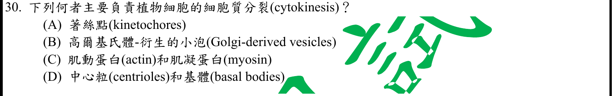
本地原卷PDF4 · 官方混科卷PDF21 · 官方原答案PDF1最下方生物表 · 已核對同年生物釋疑PDF26–27（未列本題）
官方採計：B 原答案：B
未列本輪取得的108年度釋疑PDF26–27；依同年答案採計，不宣稱沒有其他未取得公告
主分類：Ch12 The Cell Cycle
12.2 / Cytokinesis: A Closer Look
目錄行776；條目起始印刷頁241；實際目錄 PDF38
主分類理由：12.2 / Cytokinesis: A Closer Look：植物細胞胞質分裂時Golgi小泡形成細胞板，直接屬胞質分裂的最小條目。
次分類理由：無另列最小次條目；小泡融合建細胞板是原題B；主Cytokinesis，運輸微管只是輔助，沒有必要另列胞器章。
科學說明：採B。Golgi衍生小泡沿微管運送並融合成細胞板；肌動蛋白與肌凝蛋白的收縮環是動物胞質分裂的典型方式，不能套到植物。
來源涵蓋範圍：Campbell正文支援分類原理；原題限定、同年釋疑細節與最小目錄邊界逐題保留。
教材正文：印刷241／PDF290、印刷242／PDF291
補充來源：本題未另列課本外來源
另行比較：Golgi小泡與微管或動物收縮環
小泡融合建細胞板是原題B；主Cytokinesis，運輸微管只是輔助，沒有必要另列胞器章。
結論：證據確認，分類疑義已解決。完整覆核紀錄
Q31 · 13.3 / The Stages of Meiosis 正式分類
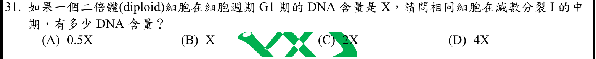
本地原卷PDF4 · 官方混科卷PDF21 · 官方原答案PDF1最下方生物表 · 已核對同年生物釋疑PDF26–27（未列本題）
官方採計：C 原答案：C
未列本輪取得的108年度釋疑PDF26–27；依同年答案採計，不宣稱沒有其他未取得公告
主分類：Ch13 Meiosis and Sexual Life Cycles
13.3 / The Stages of Meiosis
目錄行837；條目起始印刷頁259；實際目錄 PDF38
次分類：Ch12 The Cell Cycle
12.2 / Phases of the Cell Cycle
目錄行770；條目起始印刷頁237；實際目錄 PDF38
主分類理由：13.3 / The Stages of Meiosis：減數分裂I中期尚未分開姐妹染色分體，核心在減數分裂階段。
次分類理由：12.2 / Phases of the Cell Cycle：細胞週期S期複製DNA說明G1的X如何成為2X。
科學說明：採C。G1為X，經一次S期成為2X，減數I中期還沒有完成第一次分裂，仍是2X。DNA量加倍不等於倍體數由2n變4n；也沒有在減數I前連續複製兩次。
來源涵蓋範圍：Campbell正文支援分類原理；原題限定、同年釋疑細節與最小目錄邊界逐題保留。
教材正文：印刷237／PDF286、印刷259／PDF308、印刷260／PDF309、印刷261／PDF310、印刷262／PDF311
補充來源：本題未另列課本外來源
Q32 · 15.2 / The Chromosomal Basis of Sex 正式分類
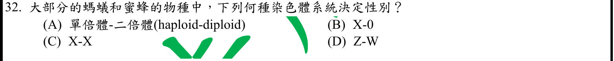
本地原卷PDF4 · 官方混科卷PDF21 · 官方原答案PDF1最下方生物表 · 已核對同年生物釋疑PDF26–27（未列本題）
官方採計：A 原答案：A
未列本輪取得的108年度釋疑PDF26–27；依同年答案採計，不宣稱沒有其他未取得公告
主分類：Ch15 The Chromosomal Basis of Inheritance
15.2 / The Chromosomal Basis of Sex
目錄行942；條目起始印刷頁298；實際目錄 PDF39
主分類理由：15.2 / The Chromosomal Basis of Sex：螞蟻與蜜蜂的單倍體－二倍體系統列在性別的染色體基礎。
次分類理由：無另列最小次條目；298–299性別系統支持A；原題大部分的限定保存，不延伸例外造成錯誤廣化。
科學說明：採A。題設的大多數物種雄性由未受精卵發育為單倍體、雌性由受精卵發育為二倍體。保留「大部分」限定，不推成所有膜翅目均無例外。
來源涵蓋範圍：Campbell正文支援分類原理；原題限定、同年釋疑細節與最小目錄邊界逐題保留。
教材正文：印刷298／PDF347、印刷299／PDF348
補充來源：本題未另列課本外來源
另行比較：haplodiploidy與X0或ZW
298–299性別系統支持A；原題大部分的限定保存，不延伸例外造成錯誤廣化。
結論：證據確認，分類疑義已解決。完整覆核紀錄
Q33 · 16.1 / Building a Structural Model of DNA 正式分類
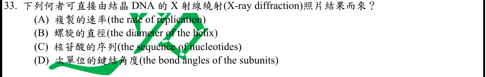
本地原卷PDF4 · 官方混科卷PDF21 · 官方原答案PDF1最下方生物表 · 已核對同年生物釋疑PDF26–27（未列本題）
官方採計：B 原答案：B
未列本輪取得的108年度釋疑PDF26–27；依同年答案採計，不宣稱沒有其他未取得公告
主分類：Ch16 The Molecular Basis of Inheritance
16.1 / Building a Structural Model of DNA
目錄行1000；條目起始印刷頁317；實際目錄 PDF39
主分類理由：16.1 / Building a Structural Model of DNA：Franklin繞射證據與DNA雙股結構推論在結構證據最小條目。
次分類理由：無另列最小次條目；重開Q33，B為可推得的尺寸；結晶與纖維繞射文字差異保留，主要歸DNA結構證據。
科學說明：採B。繞射圖樣提供螺旋尺寸等結構線索，可推知直徑；不能由該照片直接讀出複製速率或核苷酸序列。原題「結晶DNA」保留；課本歷史例為DNA纖維繞射，照片不是普通放大影像，也不是單靠照片直接指定所有次單位鍵角。
來源涵蓋範圍：Campbell正文支援分類原理；原題限定、同年釋疑細節與最小目錄邊界逐題保留。
教材正文：印刷317／PDF366、印刷318／PDF367、印刷319／PDF368
補充來源：本題未另列課本外來源
另行比較：DNA繞射照片與直接序列測定
重開Q33，B為可推得的尺寸；結晶與纖維繞射文字差異保留，主要歸DNA結構證據。
結論：證據確認，分類疑義已解決。完整覆核紀錄
Q34 · 16.3 / A chromosome consists of a DNA molecule packed together with proteins 正式分類
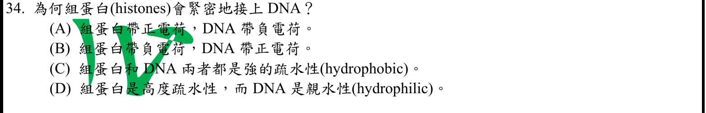
本地原卷PDF4 · 官方混科卷PDF21 · 官方原答案PDF1最下方生物表 · 已核對同年生物釋疑PDF26–27（未列本題）
官方採計：A 原答案：A
未列本輪取得的108年度釋疑PDF26–27；依同年答案採計，不宣稱沒有其他未取得公告
主分類：Ch16 The Molecular Basis of Inheritance
16.3 / A chromosome consists of a DNA molecule packed together with proteins
目錄行1022；條目起始印刷頁330；實際目錄 PDF39
主分類理由：16.3 / A chromosome consists of a DNA molecule packed together with proteins：DNA與組蛋白的帶電相互作用屬染色體DNA包裝的Concept16.3；目錄未另列histones小目。
次分類理由：無另列最小次條目；16.3為真實最小條目，330正文正負電荷支持A；不用題詞自行創建histone目錄。
科學說明：採A。組蛋白富含帶正電的胺基酸區域，與DNA帶負電的磷酸骨架相吸；不能顛倒電荷或以強疏水性解釋此結合。330頁正文直接支持。
來源涵蓋範圍：Campbell正文支援分類原理；原題限定、同年釋疑細節與最小目錄邊界逐題保留。
教材正文：印刷330／PDF379、印刷331／PDF380
補充來源：本題未另列課本外來源
另行比較：histones正文小標是否屬正式目錄
16.3為真實最小條目，330正文正負電荷支持A；不用題詞自行創建histone目錄。
結論：證據確認，分類疑義已解決。完整覆核紀錄
Q35 · 18.4 / Pattern Formation: Setting Up the Body Plan 正式分類
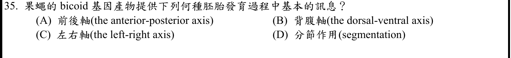
本地原卷PDF4 · 官方混科卷PDF21 · 官方原答案PDF1最下方生物表 · 已核對同年生物釋疑PDF26–27（未列本題）
官方採計：A 原答案：A
未列本輪取得的108年度釋疑PDF26–27；依同年答案採計，不宣稱沒有其他未取得公告
主分類：Ch18 Regulation of Gene Expression
18.4 / Pattern Formation: Setting Up the Body Plan
目錄行1155；條目起始印刷頁384；實際目錄 PDF39
主分類理由：18.4 / Pattern Formation: Setting Up the Body Plan：bicoid母源產物的前後濃度梯度提供胚胎位置資訊，落在果蠅體式建立與決定。
次分類理由：無另列最小次條目；bicoid提供前後位置梯度，A比泛稱分節精確；採果蠅體式建立條目。
科學說明：採A。母源bicoid mRNA定位前端，產物梯度決定前後軸的位置資訊；其後會影響分節基因，但題目所問最基本資訊不是以D取代前後軸。
來源涵蓋範圍：Campbell正文支援分類原理；原題限定、同年釋疑細節與最小目錄邊界逐題保留。
教材正文：印刷384／PDF433、印刷385／PDF434、印刷386／PDF435、印刷387／PDF436、印刷388／PDF437
補充來源：本題未另列課本外來源
Q36 · 24.1 / The Biological Species Concept 正式分類
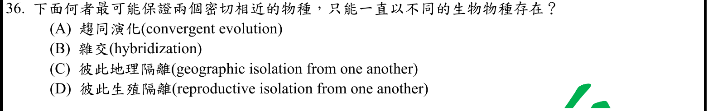
本地原卷PDF5 · 官方混科卷PDF22 · 官方原答案PDF1最下方生物表 · 同年釋疑PDF27
官方採計：D 原答案：D
108年度7/1審議會議釋疑維持原答案D
主分類：Ch24 The Origin of Species
24.1 / The Biological Species Concept
目錄行1488；條目起始印刷頁507；實際目錄 PDF41
次分類：Ch24 The Origin of Species
24.2 / Allopatric (“Other Country”) Speciation
目錄行1498；條目起始印刷頁511；實際目錄 PDF41
主分類理由：24.1 / The Biological Species Concept：生殖隔離直接定義阻止兩族群產生可存活且可育後代的生物障礙。
次分類理由：24.2 / Allopatric (“Other Country”) Speciation：異域物種形成的地理隔離是可促成分化的條件，不是兩生物物種持續區隔的必然生物障礙。
科學說明：採D；同年釋疑PDF27維持D，引11e印刷505；12e對應507–509。依生物物種概念，生殖隔離較地理隔離符合題意。題文「保證」「一直」為簡化用語，不宣稱隔離機制在演化中永遠不能改變。
來源涵蓋範圍：Campbell正文支援分類原理；原題限定、同年釋疑細節與最小目錄邊界逐題保留。
教材正文：印刷507／PDF556、印刷508／PDF557、印刷509／PDF558、印刷510／PDF559、印刷511／PDF560、印刷512／PDF561
補充來源：本題未另列課本外來源
另行比較：地理隔離能否永遠保持不同生物物種
同年PDF27及12e生殖障礙定義支持D；地理因素只列異域物種形成次目，保證一直措辭不做絕對化。
結論：證據確認，分類疑義已解決。完整覆核紀錄
Q37 · 27.1 / Motility 正式分類
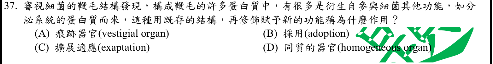
本地原卷PDF5 · 官方混科卷PDF22 · 官方原答案PDF1最下方生物表 · 已核對同年生物釋疑PDF26–27（未列本題）
官方採計：C 原答案：C
未列本輪取得的108年度釋疑PDF26–27；依同年答案採計，不宣稱沒有其他未取得公告
主分類：Ch27 Bacteria and Archaea
27.1 / Motility
目錄行1712；條目起始印刷頁576；實際目錄 PDF42
次分類：Ch25 The History of Life on Earth
25.6 / Evolutionary Novelties
目錄行1606；條目起始印刷頁547；實際目錄 PDF41
主分類理由：27.1 / Motility：本題鞭毛蛋白改作新用途的具體例子直接出現在細菌運動性小節577頁。
次分類理由：25.6 / Evolutionary Novelties：演化新穎構造小節提供exaptation將既有構造徵用為新功能的上位概念。
科學說明：採C。原有蛋白結構被徵用、修飾而具新用途為exaptation；不是退化失去功能的痕跡器官。原選項D「同質的器官(homogeneous organ)」原樣保留，不能默改成homologous；現代分泌系統不必被簡化成已證明的唯一直接祖先。
來源涵蓋範圍：Campbell正文支援分類原理；原題限定、同年釋疑細節與最小目錄邊界逐題保留。
教材正文：印刷547／PDF596、印刷548／PDF597、印刷576／PDF625、印刷577／PDF626
補充來源：本題未另列課本外來源
另行比較：exaptation應主抽象演化或具體鞭毛例
577運動性含題設既有蛋白挪用例，主Motility、次Evolutionary Novelties；不將D的homogeneous暗改。
結論：證據確認，分類疑義已解決。完整覆核紀錄
Q38 · 27.3 / Diverse nutritional and metabolic adaptations have evolved in prokaryotes 正式分類
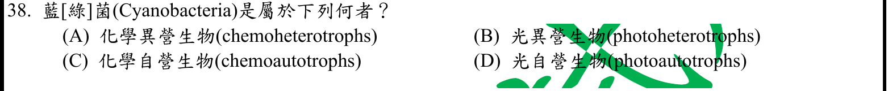
本地原卷PDF5 · 官方混科卷PDF22 · 官方原答案PDF1最下方生物表 · 已核對同年生物釋疑PDF26–27（未列本題）
官方採計：D 原答案：D
未列本輪取得的108年度釋疑PDF26–27；依同年答案採計，不宣稱沒有其他未取得公告
主分類：Ch27 Bacteria and Archaea
27.3 / Diverse nutritional and metabolic adaptations have evolved in prokaryotes
目錄行1731；條目起始印刷頁581；實際目錄 PDF42
次分類：Ch27 Bacteria and Archaea
27.4 / Bacteria
目錄行1751；條目起始印刷頁583；實際目錄 PDF42
主分類理由：27.3 / Diverse nutritional and metabolic adaptations have evolved in prokaryotes：原核生物營養多樣性按能量與碳來源分類，概念27.3引言就是此處最小目錄。
次分類理由：27.4 / Bacteria：細菌多樣性中的藍綠菌例子補足其氧合光合作用與自營營養。
科學說明：採D。藍綠菌以光為能量來源並由CO2取得碳，為光自營生物。能量來源與碳來源分別判斷，不能因「細菌」一詞就當化學異營。
來源涵蓋範圍：Campbell正文支援分類原理；原題限定、同年釋疑細節與最小目錄邊界逐題保留。
教材正文：印刷581／PDF630、印刷582／PDF631、印刷583／PDF632、印刷584／PDF633
補充來源：本題未另列課本外來源
另行比較：光能與CO2碳來源各自判斷
光自營D，27.3營養分類在首個小節前之Concept引言；27.4細菌藍綠菌例作次目。
結論：證據確認，分類疑義已解決。完整覆核紀錄
Q39 · 41.3 / Digestion in the Small Intestine 正式分類
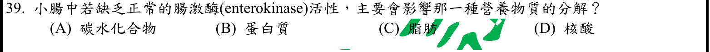
本地原卷PDF5 · 官方混科卷PDF22 · 官方原答案PDF1最下方生物表 · 已核對同年生物釋疑PDF26–27（未列本題）
官方採計：B 原答案：B
未列本輪取得的108年度釋疑PDF26–27；依同年答案採計，不宣稱沒有其他未取得公告
主分類：Ch41 Animal Nutrition
41.3 / Digestion in the Small Intestine
目錄行2714；條目起始印刷頁908；實際目錄 PDF46
主分類理由：41.3 / Digestion in the Small Intestine：小腸的消化階段包括蛋白酶原活化與蛋白質分解，題設腸激酶缺乏影響此鏈。
次分類理由：無另列最小次條目；NLM直接定義為切除胰蛋白酶原N端的蛋白水解酶，B；小腸消化條目與具名補充一致。
科學說明：採B。enterokinase又稱enteropeptidase，先把trypsinogen切成trypsin，再啟動其他蛋白酶原；名稱帶kinase不表示它是磷酸轉移激酶。Campbell909頁支援蛋白酶活化鏈，NLM MeSH補足具名酵素與切割功能。
來源涵蓋範圍：Campbell提供列示分類原理；未直接涵蓋的細節由具名補充來源與同年釋疑支援，取得及實讀界線見來源紀錄。
教材正文：印刷908／PDF957、印刷909／PDF958
補充來源：S08
另行比較：enterokinase名称是否代表磷酸化
NLM直接定義為切除胰蛋白酶原N端的蛋白水解酶，B；小腸消化條目與具名補充一致。
結論：證據確認，分類疑義已解決。完整覆核紀錄
Q40 · 36.3 / Bulk Flow Transport via the Xylem 正式分類
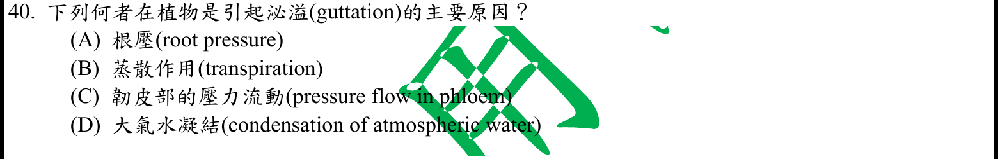
本地原卷PDF5 · 官方混科卷PDF22 · 官方原答案PDF1最下方生物表 · 已核對同年生物釋疑PDF26–27（未列本題）
官方採計：A 原答案：A
未列本輪取得的108年度釋疑PDF26–27；依同年答案採計，不宣稱沒有其他未取得公告
主分類：Ch36 Resource Acquisition and Transport in Vascular Plants
36.3 / Bulk Flow Transport via the Xylem
目錄行2381；條目起始印刷頁792；實際目錄 PDF45
主分類理由：36.3 / Bulk Flow Transport via the Xylem：木質部汁液整體流動小節直接區別根壓與蒸散拉力，並說明泌溢。
次分類理由：無另列最小次條目；793–794區分根壓排液與大氣凝露，A；真實最小目錄Bulk Flow Transport via the Xylem包含兩種水運輸動力。
科學說明：採A。根壓將木質部液體推至葉緣排出造成guttation；大氣水凝結為露水，並非植物內部排液；韌皮部壓流與蒸散拉力也不是本題主要原因。
來源涵蓋範圍：Campbell正文支援分類原理；原題限定、同年釋疑細節與最小目錄邊界逐題保留。
教材正文：印刷792／PDF841、印刷793／PDF842、印刷794／PDF843
補充來源：本題未另列課本外來源
另行比較：泌溢是根壓排液還是葉面凝露
793–794區分根壓排液與大氣凝露，A；真實最小目錄Bulk Flow Transport via the Xylem包含兩種水運輸動力。
結論：證據確認，分類疑義已解決。完整覆核紀錄
Q41 · 39.2 / A Survey of Plant Hormones 正式分類
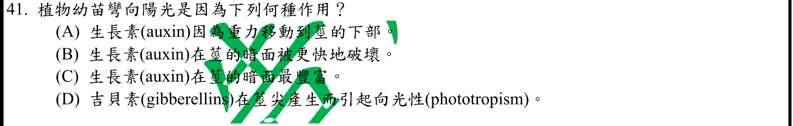
本地原卷PDF5 · 官方混科卷PDF22 · 官方原答案PDF1最下方生物表 · 已核對同年生物釋疑PDF26–27（未列本題）
官方採計：C 原答案：C
未列本輪取得的108年度釋疑PDF26–27；依同年答案採計，不宣稱沒有其他未取得公告
主分類：Ch39 Plant Responses to Internal and External Signals
39.2 / A Survey of Plant Hormones
目錄行2557；條目起始印刷頁847；實際目錄 PDF45
主分類理由：39.2 / A Survey of Plant Hormones：847–848頁在植物激素總覽之auxin正文下直接解釋暗側累積與伸長差異，是實際最小目錄。
次分類理由：無另列最小次條目；847全頁確認Auxin在Survey標題之後，採L2557；暗側生長素多支持C，正文auxin非獨立目錄。
科學說明：採C。莖的背光側auxin較多而伸長較快，造成向光彎曲。生長素極性運輸不由重力方向決定，原題暗面更快破壞與吉貝素主導也不符合。Auxin是正文子題，實際目錄最小為A Survey of Plant Hormones，不虛構目錄節點。
來源涵蓋範圍：Campbell正文支援分類原理；原題限定、同年釋疑細節與最小目錄邊界逐題保留。
教材正文：印刷845／PDF894、印刷846／PDF895、印刷847／PDF896、印刷848／PDF897、印刷849／PDF898
補充來源：本題未另列課本外來源
另行比較：General Characteristics與Survey of Plant Hormones邊界
847全頁確認Auxin在Survey標題之後，採L2557；暗側生長素多支持C，正文auxin非獨立目錄。
結論：證據確認，分類疑義已解決。完整覆核紀錄
Q42 · 40.1 / Hierarchical Organization of Body Plans 正式分類
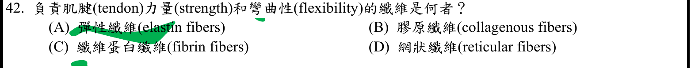
本地原卷PDF5 · 官方混科卷PDF22 · 官方原答案PDF1最下方生物表 · 已核對同年生物釋疑PDF26–27（未列本題）
官方採計：B 原答案：B
未列本輪取得的108年度釋疑PDF26–27；依同年答案採計，不宣稱沒有其他未取得公告
主分類：Ch40 Basic Principles of Animal Form and Function
40.1 / Hierarchical Organization of Body Plans
目錄行2623；條目起始印刷頁876；實際目錄 PDF46
主分類理由：40.1 / Hierarchical Organization of Body Plans：動物組織階層組織的小節內图40.5比較結締組織與纖維，直接列肌腱。
次分類理由：無另列最小次條目；878圖逐項比較膠原與彈性纖維，肌腱膠原B直接成立；最小目錄仍Hierarchical Organization of Body Plans。
科學說明：採B。878頁說膠原纖維提供strength與flexibility，肌腱為富含膠原的纖維性結締組織。flexibility是可彎曲且有抗張強度，不等於elastin的彈性回彈。Connective Tissue是圖內標題，不是另立目錄最小條目。
來源涵蓋範圍：Campbell正文支援分類原理；原題限定、同年釋疑細節與最小目錄邊界逐題保留。
教材正文：印刷876／PDF925、印刷877／PDF926、印刷878／PDF927
補充來源：本題未另列課本外來源
另行比較：彎曲性是否等於elastin回彈
878圖逐項比較膠原與彈性纖維，肌腱膠原B直接成立；最小目錄仍Hierarchical Organization of Body Plans。
結論：證據確認，分類疑義已解決。完整覆核紀錄
Q43 · 27.1 / Cell-Surface Structures 正式分類
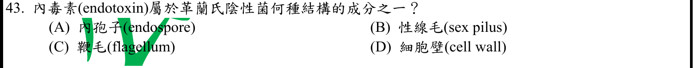
本地原卷PDF5 · 官方混科卷PDF22 · 官方原答案PDF1最下方生物表 · 已核對同年生物釋疑PDF26–27（未列本題）
官方採計：D 原答案：D
未列本輪取得的108年度釋疑PDF26–27；依同年答案採計，不宣稱沒有其他未取得公告
主分類：Ch27 Bacteria and Archaea
27.1 / Cell-Surface Structures
目錄行1709；條目起始印刷頁574；實際目錄 PDF42
次分類：Ch27 Bacteria and Archaea
27.6 / Pathogenic Bacteria
目錄行1774；條目起始印刷頁588；實際目錄 PDF42
主分類理由：27.1 / Cell-Surface Structures：革蘭氏陰性菌外膜及LPS的結構定位，直接歸細胞表面構造。
次分類理由：27.6 / Pathogenic Bacteria：有害細菌小節解釋LPS內毒素與致病效應，補充題設endotoxin名詞。
科學說明：採D。題目細胞壁採含外膜的廣義菌體包被用法；內毒素為外膜LPS的毒性部分，不能誤認位於鞭毛、性線毛、內孢子或直接把它當肽聚糖。
來源涵蓋範圍：Campbell正文支援分類原理；原題限定、同年釋疑細節與最小目錄邊界逐題保留。
教材正文：印刷574／PDF623、印刷575／PDF624、印刷588／PDF637
補充來源：本題未另列課本外來源
另行比較：cell wall與outer membrane是否同義
採D且註明廣義包被，精確位置為外膜LPS；Cell-Surface Structures主、Pathogenic Bacteria次，保留概念尺度。
結論：證據確認，分類疑義已解決。完整覆核紀錄
Q44 · 48.4 / Neurotransmitters 正式分類
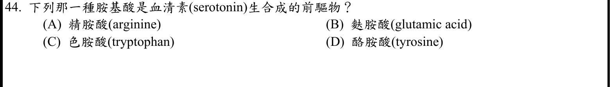
本地原卷PDF5 · 官方混科卷PDF22 · 官方原答案PDF1最下方生物表 · 已核對同年生物釋疑PDF26–27（未列本題）
官方採計：C 原答案：C
未列本輪取得的108年度釋疑PDF26–27；依同年答案採計，不宣稱沒有其他未取得公告
主分類：Ch48 Neurons, Synapses, and Signaling
48.4 / Neurotransmitters
目錄行3231；條目起始印刷頁1080；實際目錄 PDF48
主分類理由：48.4 / Neurotransmitters：神經傳遞物質條目中的生物胺正文直接指出serotonin的tryptophan前驅物；目錄未另列Biogenic Amines。
次分類理由：無另列最小次條目；1081與出版商Serotonin Biosynthesis段一致為C；真實最小目錄Neurotransmitters，Biogenic Amines僅為正文子題。
科學說明：採C。Campbell1081頁直接說血清素由色胺酸合成；酪胺酸對應其他生物胺路徑，不能混用。出版商原教材樣章的Serotonin Biosynthesis段另支持，實讀範圍不含整本書。
來源涵蓋範圍：Campbell提供列示分類原理；未直接涵蓋的細節由具名補充來源與同年釋疑支援，取得及實讀界線見來源紀錄。
教材正文：印刷1080／PDF1129、印刷1081／PDF1130、印刷1082／PDF1131
補充來源：S11
另行比較：serotonin前驅物是tryptophan或tyrosine
1081與出版商Serotonin Biosynthesis段一致為C；真實最小目錄Neurotransmitters，Biogenic Amines僅為正文子題。
結論：證據確認，分類疑義已解決。完整覆核紀錄
Q45 · 41.3 / Absorption in the Small Intestine 正式分類
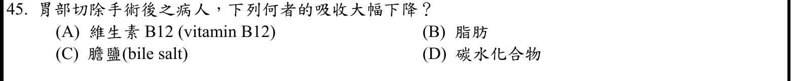
本地原卷PDF6 · 官方混科卷PDF23 · 官方原答案PDF1最下方生物表 · 已核對同年生物釋疑PDF26–27（未列本題）
官方採計：A 原答案：A
未列本輪取得的108年度釋疑PDF26–27；依同年答案採計，不宣稱沒有其他未取得公告
主分類：Ch41 Animal Nutrition
41.3 / Absorption in the Small Intestine
目錄行2717；條目起始印刷頁909；實際目錄 PDF46
次分類：Ch41 Animal Nutrition
41.3 / Digestion in the Stomach
目錄行2711；條目起始印刷頁907；實際目錄 PDF46
次分類：Ch41 Animal Nutrition
41.1 / Essential Nutrients
目錄行2685；條目起始印刷頁899；實際目錄 PDF46
主分類理由：41.3 / Absorption in the Small Intestine：胃切除造成B12吸收障礙，核心是小腸營養吸收的前提條件。
次分類理由：41.3 / Digestion in the Stomach：胃的壁細胞提供內在因子與酸性環境，說明切胃如何間接影響迴腸吸收；41.1 / Essential Nutrients：必需營養素條目中的維生素段辨認B12為必要微量有機養分，非膽鹽或三大營養素。
科學說明：採A。胃酸協助游離食物中B12，壁細胞內在因子與B12複合後在末端迴腸吸收；切胃減少此支持，並非B12主要在胃被吸收。Campbell提供胃與小腸一般架構，內在因子細節由NIH ODS補足；不表示其他營養素完全不受手術影響。
來源涵蓋範圍：Campbell提供列示分類原理；未直接涵蓋的細節由具名補充來源與同年釋疑支援，取得及實讀界線見來源紀錄。
教材正文：印刷900／PDF949、印刷907／PDF956、印刷909／PDF958、印刷910／PDF959
補充來源：S09
另行比較：胃切除為何影響小腸吸收
NIH ODS直接證明胃內在因子與迴腸吸收，A；主Absorption in the Small Intestine、次Digestion in the Stomach及Essential Nutrients。
結論：證據確認，分類疑義已解決。完整覆核紀錄
Q46 · 46.4 / Hormonal Control of Female Reproductive Cycles 正式分類
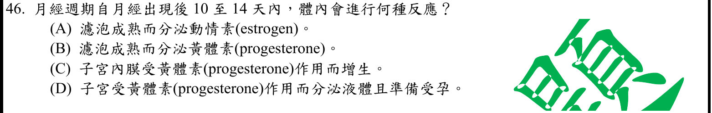
本地原卷PDF6 · 官方混科卷PDF23 · 官方原答案PDF1最下方生物表 · 已核對同年生物釋疑PDF26–27（未列本題）
官方採計：A 原答案：A
未列本輪取得的108年度釋疑PDF26–27；依同年答案採計，不宣稱沒有其他未取得公告
主分類：Ch46 Animal Reproduction
46.4 / Hormonal Control of Female Reproductive Cycles
目錄行3104；條目起始印刷頁1032；實際目錄 PDF48
主分類理由：46.4 / Hormonal Control of Female Reproductive Cycles：濾泡成熟、動情素上升與排卵前時序直接屬女性生殖週期。
次分類理由：無另列最小次條目；題設10–14天典型濾泡成熟動情素上升，A；保留週期變動而不從日期作普遍定律。
科學說明：採A。以題設典型約28天週期且月經首日為第1天，10–14天為濾泡晚期至排卵前，濾泡成熟並分泌動情素；大量黃體素與內膜分泌相屬排卵後黃體期。實際週期會變動，日期並非所有人的固定生理時間。
來源涵蓋範圍：Campbell正文支援分類原理；原題限定、同年釋疑細節與最小目錄邊界逐題保留。
教材正文：印刷1032／PDF1081、印刷1033／PDF1082、印刷1034／PDF1083
補充來源：本題未另列課本外來源
Q47 · 15.2 / The Chromosomal Basis of Sex 正式分類
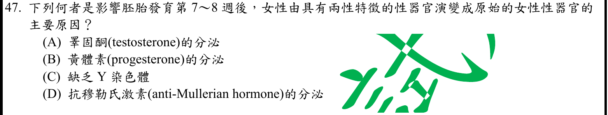
本地原卷PDF6 · 官方混科卷PDF23 · 官方原答案PDF1最下方生物表 · 已核對同年生物釋疑PDF26–27（未列本題）
官方採計：C 原答案：C
未列本輪取得的108年度釋疑PDF26–27；依同年答案採計，不宣稱沒有其他未取得公告
主分類：Ch15 The Chromosomal Basis of Inheritance
15.2 / The Chromosomal Basis of Sex
目錄行942；條目起始印刷頁298；實際目錄 PDF39
次分類：Ch45 Hormones and the Endocrine System
45.3 / Sex Hormones
目錄行3042；條目起始印刷頁1014；實際目錄 PDF47
主分類理由：15.2 / The Chromosomal Basis of Sex：選項以Y染色體缺乏判定典型女性性別發育，主要為Y/SRY的染色體性別基礎。
次分類理由：45.3 / Sex Hormones：性激素小節支援雄激素在男性生殖構造分化的角色，說明基因與內分泌層次。
科學說明：採C。典型XX且無Y/SRY時不啟動睪丸分化訊號，與題設女性發育相符；睪固酮與AMH屬睪丸路徑，黃體素不是此處起始因素。原題第7–8週及「兩性特徵」保留；較精確應稱尚未分化的共同原基。缺Y不是所有性別發育差異的充分解釋，卵巢發育也有主動基因路徑。
來源涵蓋範圍：Campbell提供列示分類原理；未直接涵蓋的細節由具名補充來源與同年釋疑支援，取得及實讀界線見來源紀錄。
教材正文：印刷298／PDF347、印刷299／PDF348、印刷1014／PDF1063、印刷1030／PDF1079、印刷1031／PDF1080
補充來源：S13
另行比較：Y染色體缺乏能否涵蓋全部性別差異
重開Q47四選項及1030生殖圖，典型條件下C最合題意；主染色體性別、次性激素，未分化原基及基因例外範圍保留。
結論：證據確認，分類疑義已解決。完整覆核紀錄
Q48 · 46.5 / Conception, Embryonic Development, and Birth 正式分類
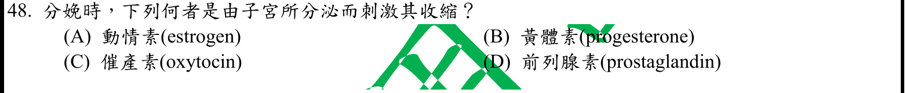
本地原卷PDF6 · 官方混科卷PDF23 · 官方原答案PDF1最下方生物表 · 同年釋疑PDF27
官方採計：D 原答案：D
108年度7/1審議會議釋疑維持原答案D
主分類：Ch46 Animal Reproduction
46.5 / Conception, Embryonic Development, and Birth
目錄行3114；條目起始印刷頁1034；實際目錄 PDF48
次分類：Ch45 Hormones and the Endocrine System
45.1 / Intercellular Information Flow
目錄行2998；條目起始印刷頁1000；實際目錄 PDF47
主分類理由：46.5 / Conception, Embryonic Development, and Birth：妊娠與分娩小節直接討論前列腺素促進子宮收縮的正回饋。
次分類理由：45.1 / Intercellular Information Flow：局部訊息的旁分泌與自分泌解釋前列腺素與遠距內分泌催產素的差別。
科學說明：採D；同年釋疑PDF27以Vander15e17章634頁說明近足月子宮分泌PGE2、PGF2α。Campbell1036頁圖46.18標示胎盤製造前列腺素、催產素來自胎兒及母體後葉，來源層次不完全相同，均如實保留；不能將C催產素當作子宮本身分泌的正確答案。
來源涵蓋範圍：Campbell正文支援分類原理；原題限定、同年釋疑細節與最小目錄邊界逐題保留。
教材正文：印刷1000／PDF1049、印刷1001／PDF1050、印刷1035／PDF1084、印刷1036／PDF1085、印刷1037／PDF1086
補充來源：本題未另列課本外來源
另行比較：子宮分泌PG與腦下垂體催產素來源
重開Q48及1036圖，PDF27明引子宮PGE2/PGF2α，採D；胎盤與子宮來源尺度另記，Vander只讀釋疑引文。
結論：證據確認，分類疑義已解決。完整覆核紀錄
Q49 · 49.2 / Arousal and Sleep 正式分類
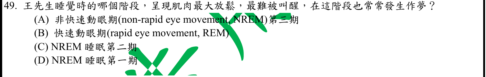
本地原卷PDF6 · 官方混科卷PDF23 · 官方原答案PDF1最下方生物表 · 已核對同年生物釋疑PDF26–27（未列本題）
官方採計：B 原答案：B
未列本輪取得的108年度釋疑PDF26–27；依同年答案採計，不宣稱沒有其他未取得公告
主分類：Ch49 Nervous Systems
49.2 / Arousal and Sleep
目錄行3255；條目起始印刷頁1094；實際目錄 PDF48
主分類理由：49.2 / Arousal and Sleep：題目以夢境與睡眠階段特徵辨識REM，最小目錄為喚醒與睡眠。
次分類理由：無另列最小次條目；重開Q49並核對NIH兩來源；官方B與科學措辭衝突分開保存，睡眠分類已解決，不把題文矛盾偽裝成無差異。
科學說明：官方採B。REM常見鮮明夢境且骨骼肌張力受到抑制；但題文「最難被叫醒」通常對應NREM深睡N3，與其餘線索混合。NIH來源分別支持N3深睡難喚醒及REM肌張力下降，保留原題疑義，不宣稱整句科學上無誤，也不擅改官方採計。分類仍明確屬Arousal and Sleep。
來源涵蓋範圍：Campbell提供列示分類原理；未直接涵蓋的細節由具名補充來源與同年釋疑支援，取得及實讀界線見來源紀錄。
教材正文：印刷1094／PDF1143、印刷1095／PDF1144
補充來源：S10
另行比較：REM肌張力與N3難喚醒線索混合
重開Q49並核對NIH兩來源；官方B與科學措辭衝突分開保存，睡眠分類已解決，不把題文矛盾偽裝成無差異。
結論：證據確認，分類疑義已解決。完整覆核紀錄
Q50 · 49.2 / Emotions 正式分類
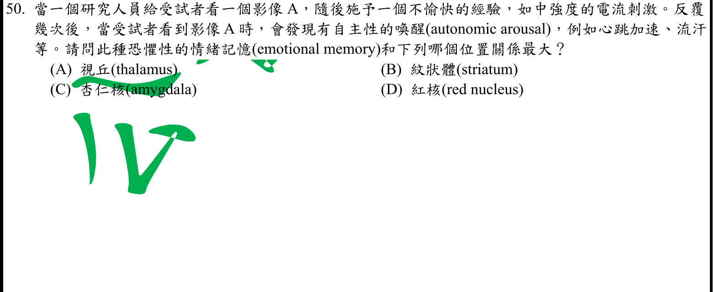
本地原卷PDF6 · 官方混科卷PDF23 · 官方原答案PDF1最下方生物表 · 已核對同年生物釋疑PDF26–27（未列本題）
官方採計：C 原答案：C
未列本輪取得的108年度釋疑PDF26–27；依同年答案採計，不宣稱沒有其他未取得公告
主分類：Ch49 Nervous Systems
49.2 / Emotions
目錄行3261；條目起始印刷頁1095；實際目錄 PDF48
次分類：Ch49 Nervous Systems
49.4 / Memory and Learning
目錄行3293；條目起始印刷頁1100；實際目錄 PDF48
主分類理由：49.2 / Emotions：恐懼制約與杏仁核引起情緒性自主反應的具體實驗，直接出現在情緒小節。
次分類理由：49.4 / Memory and Learning：學習與記憶小節補足重複配對刺激形成持續記憶的機制背景。
科學說明：採C。影像與不愉快刺激反覆配對後引起心跳、流汗等恐懼性自主反應，與杏仁核的情緒記憶關係最直接。不能因記憶一詞就改選一般記憶或運動相關核團；主條目保留情緒，學習記憶列同章最小次目。
來源涵蓋範圍：Campbell正文支援分類原理；原題限定、同年釋疑細節與最小目錄邊界逐題保留。
教材正文：印刷1095／PDF1144、印刷1096／PDF1145、印刷1100／PDF1149、印刷1101／PDF1150
補充來源：本題未另列課本外來源
另行比較：恐懼記憶應歸情緒或一般學習記憶
1095–1096 Emotions小節有杏仁核制約實驗，C；Emotions主、Memory and Learning為同章次目，不重複計Ch49。
結論：證據確認，分類疑義已解決。完整覆核紀錄
目前篩選沒有符合的題目；本年度總數仍為50題。
補充來源
查證日期：2026-09-10。使用原始研究摘要、官方資料與作者教材，不宣稱所有出版商全文已取得。詳細界線見來源紀錄。
- S01 NCBI Bookshelf：Respiratory Acidosis
通氣不足造成CO2滯留與pH下降；腎代償保留HCO3，與原發改變分開。
實讀範圍：本輪下載正文，實讀Introduction及Etiology的酸鹼與代償段；不作個案醫療建議。
原始來源1 - S02 Richard E. Klabunde：Electrocardiogram
P波為心房去極化，與機械收縮分開。
實讀範圍：web工具直接讀原作者頁P wave等段，行34–43；本機下載SSL過期失敗，無遠端原檔SHA。
原始來源1 - S03 Richard E. Klabunde：Systemic Vascular Resistance
SVR=(MAP−CVP)/CO；忽略CVP為題目D的近似關係。
實讀範圍：web工具實讀原作者正文行30–41；來源簡式把SVR誤簡寫SV，記錄時以完整式理解。本機SSL失敗，不聲稱原檔已下載。
原始來源1 - S04 NIDDK：Cushing’s Syndrome
皮質醇過量可伴高血壓、高血糖與抗發炎效應，與HPA負回饋不矛盾。
實讀範圍：下載官方PDF，實讀症狀與CRH/ACTH/皮質醇作用段；Campbell提供主要分類及回饋框架。
原始來源1 - S05 Duke：Respiratory Lung Volumes
肺泡表面張力的單界面Laplace式P=2T/r，界面活性劑降低張力。
實讀範圍：下載9頁教學PDF，實讀PDF8公式及兩種大小肺泡比較；公式另作獨立半球受力推導。
原始來源1 - S06 NCI免疫檢查點與Freeman等原始研究
PD1/PDL1抑制T細胞作用，阻斷可恢復抗腫瘤反應；原始研究支持抑制淋巴球活化與增生。
實讀範圍：NCI正文已下載並實讀機轉段；Freeman 2000以web取得的摘要及檢索正文段為限，未取得出版商整篇PDF，不由名稱推定壞死功能。
原始來源1 · 原始來源2 - S07 2025年MPC原始結構與運輸研究
MPC介導丙酮酸經粒線體內膜進基質；ΔpH耦合提供次級主動運輸解釋。
實讀範圍：Liang等Nature頁已下載，實讀Abstract的內膜載體範圍；Molecular basis論文的ΔpH與質子段僅實讀web搜尋索引回傳，PMC直接開啟及下載是驗證頁，未當全文。主動運輸採計另有12e171正文與108同年釋疑直接支持。
原始來源1 · 原始來源2 - S08 NLM MeSH：Enteropeptidase
腸肽酶為蛋白水解酶，切去trypsinogen的N端使其活化。
實讀範圍：下載及實讀MeSH定義、同義名與酵素分類；不把enterokinase誤作磷酸化激酶。
原始來源1 - S09 NIH ODS：Vitamin B12 Health Professional Fact Sheet
胃壁細胞內在因子支持B12在末端迴腸吸收，胃切除會影響吸收。
實讀範圍：web實讀Introduction行53–54與胃腸手術風險段167–168；本機下載SSL失敗，無原頁檔案SHA。
原始來源1 - S10 NIH NHLBI與MedlinePlus睡眠專家資料
N3為深睡及難喚醒；REM常見夢境及肌張力抑制，原題混合線索應保留。
實讀範圍：兩份官方網頁成功下載，實讀階段條列與REM段。NINDS PDF下載403且web無全文，保留失敗紀錄，不把它當本輪全文證據。
原始來源1 · 原始來源2 - S11 Elsevier：Handbook of the Behavioral Neurobiology of Serotonin樣章
Serotonin Biosynthesis段指出色胺酸為血清素前驅物。
實讀範圍：下載出版商22頁樣章，實讀PDF9附近Serotonin Biosynthesis段及圖4文字；不聲稱全書已讀，課本1081另有直接證據。
原始來源1 - S12 Richard E. Klabunde：Vascular Smooth Muscle Contraction and Relaxation
NO活化guanylyl cyclase並增加cGMP，與其他受器增加cAMP的路徑不同。
實讀範圍：web原作者正文行38–41及題對應段實讀；本機下載SSL過期失敗，保留web讀取界線。
原始來源1 - S13 NCBI Bookshelf：Sexual Differentiation（Endotext）
典型雄激素及AMH存在促男性生殖道，缺乏時走女性路徑；性腺發育涉及相互調控的基因網路。
實讀範圍：本輪web搜尋回傳原著章節Abstract及相關段落，未下載整章；只補充Q47的典型條件與例外邊界。
原始來源1